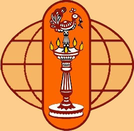
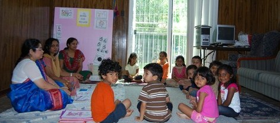

|  |



|
Upcoming Events
Bala Vihar Year Round events are as follows:
- Pongal Celebrations: January of every year (Potluck event- Surya Bhagavan -Sun God Puja cooking Pongal in the traditional earthen pot, Kite flying and Rangoli)-Open to Non Bala Vihar and Bala Vihar members. Free for members and non members pay nominal donation.
- Holi Celebrations: March/April every year- (Fund raising event for )-Open to Non Bala Vihar and Bala Vihar members. Members and Non balvihar members pay nominal donation for the event expenses.
- Gurudev Birthday: May every year ( only to members- Food sponsored by Chinmaya mission)
- Guru Poornima: July every year ( only to Bala Vihar members)
- GuruPaduka Puja: August every year (only to members- Food sponsored by Chinmaya mission)
- Open House: August every year: Kids Show and Tell of what they have learned (Only to Bala Vihar members- Food sponsored by Community Members)
- Diwali Celebrations: October/November of every year –Fund raising potluck event- Lakshmi Puja , Sloka Recital/Dance-drama (Traditional food, Fireworks and fun)- Open to Non Bala Vihar and Bala Vihar members. Free for members and Non Bala Vihar members pay nominal donation.
- Thanksgiving lunch: November of every year (TBA)